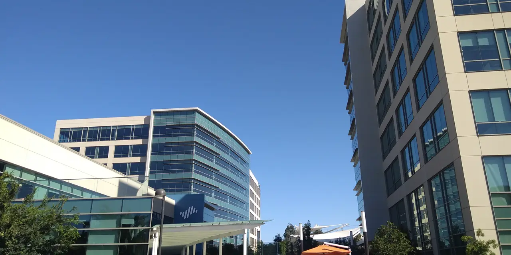

사이버보안 투자는 쉽게 납득됩니다. 공격은 늘고, 규제는 강해지고, 기업은 데이터와 클라우드 의존도가 커집니다. 하지만 PANW 주주가 궁금해해야 할 질문은 “보안이 중요합니까”가 아닙니다. 이미 중요합니다. 진짜 질문은 “기업 보안 예산이 팔로 알토의 플랫폼으로 얼마나 모입니까”입니다.
팔로 알토 네트웍스는 방화벽 회사에서 클라우드 보안, 보안 운영, 공격 표면 관리, AI 보안까지 넓어졌습니다. 제품이 많아질수록 기회도 커지지만 고객 입장에서는 복잡해질 수 있습니다. 회사가 플랫폼화를 말하는 이유는 여러 제품을 하나의 구매·운영 체계로 묶어 고객 지출을 오래 붙잡기 위해서입니다.
팔로 알토 네트웍스의 최근 실적 발표에서 투자자가 봐야 할 것은 매출보다 차세대 보안 ARR, 청구액, RPO, 영업마진입니다. 보안 수요가 강하다는 말은 출발점이고, 플랫폼화가 실제 숫자로 이어지는지가 결론입니다.
보안 수요는 항상 있지만 예산은 통합됩니다

보안 시장은 제품이 너무 많아졌습니다. 기업 보안팀은 엔드포인트, 네트워크, 클라우드, 인증, 로그, 탐지·대응 도구를 따로 관리해야 합니다. 이 복잡함은 비용입니다. 팔로 알토는 이 비용을 줄여주겠다고 말합니다. 고객이 여러 제품을 하나의 플랫폼으로 옮기면 회사 입장에서는 지출 점유율이 올라갑니다.
다만 플랫폼화에는 비용이 있습니다. 고객을 빠르게 끌어오려면 할인과 전환 지원이 필요합니다. 단기 청구액이 둔화되어 보일 수 있고, 영업비용이 늘 수 있습니다. 그래서 시장은 플랫폼화 전략을 좋아하면서도 동시에 숫자로 검증하려 합니다.
PANW의 핵심은 통합 보안 예산의 승자가 되는 것입니다. 개별 제품 하나가 좋은 것보다 고객 계정 안에서 여러 모듈이 붙는 것이 중요합니다. 이때 ARR과 유지율이 주가의 언어가 됩니다.
크라우드스트라이크와 포티넷은 다른 문에서 들어옵니다
관련 영상
Palo Alto Networks Q2 2026 Earnings Call
크라우드스트라이크는 엔드포인트와 보안 운영에서 강합니다. 포티넷은 네트워크 보안과 어플라이언스 가격 경쟁력이 강합니다. 옥타는 인증과 아이덴티티에서 고객 접점을 갖고 있습니다. 팔로 알토는 이들과 완전히 같은 제품을 파는 것은 아니지만, 고객 보안 예산은 결국 한정되어 있습니다.
기업은 모든 보안 도구를 최고 제품으로만 고르지 않습니다. 운영 인력, 통합 난이도, 감사 보고, 사고 대응 속도를 함께 봅니다. 팔로 알토가 플랫폼 사업자로 인정받으려면 “제품이 많다”가 아니라 “운영이 쉬워진다”를 증명해야 합니다.
AI 보안도 같은 관점에서 봐야 합니다. AI 위협이라는 말은 좋지만, 고객이 실제로 추가 예산을 배정해야 의미가 있습니다. 기존 보안 예산을 새 이름으로 재분류하는 것인지, 새로운 지출이 생기는 것인지 구분해야 합니다.
ARR은 성장률보다 품질을 봐야 합니다
ARR이 늘어도 할인으로 만든 ARR이면 질이 낮습니다. 고객이 여러 제품을 장기 계약으로 묶고, 갱신 때 가격을 유지하며, 사용량이 늘어나는 ARR이어야 합니다. 팔로 알토의 플랫폼화는 이 고품질 ARR을 만들겠다는 전략입니다.
청구액과 RPO도 함께 봐야 합니다. 매출은 회계적으로 나뉘어 인식되기 때문에 고객 계약의 앞단을 보려면 청구액과 잔여계약가치가 중요합니다. 보안 기업은 장기 계약이 많아 실적의 선행 신호가 손익계산서보다 계약 지표에 먼저 나타납니다.
영업마진은 플랫폼화의 최종 시험입니다. 고객을 묶기 위해 계속 많은 영업비용을 써야 한다면 전략의 질은 낮습니다. 반대로 초기 전환 비용 이후 마진이 개선되면 플랫폼화는 진짜 레버리지로 바뀝니다.
PANW는 공포보다 운영비 절감으로 팔려야 합니다
PANW의 좋은 시나리오는 보안 사고 공포가 아니라 고객 운영비 절감으로 제품이 팔리는 경우입니다. 고객이 여러 보안 도구를 줄이고 팔로 알토 플랫폼에 더 많은 기능을 맡기면 유지율과 ARR은 강해집니다.
나쁜 시나리오는 플랫폼화가 할인 전략으로만 보이고, 청구액 성장이 둔화되며, 경쟁사가 특정 영역에서 고객 지출을 빼앗아가는 경우입니다. 보안 수요가 강해도 모든 보안 기업이 동시에 높은 마진을 누리는 것은 아닙니다.
따라서 팔로 알토 네트웍스를 볼 때는 차세대 보안 ARR, 청구액, RPO, 영업마진, 플랫폼 고객 수, 제품별 경쟁 압력을 함께 봐야 합니다. 이 회사의 투자 포인트는 해킹 뉴스가 아니라 고객 보안 운영을 더 싸고 단순하게 만드는 능력입니다.
팔로 알토의 플랫폼화는 고객에게도 어려운 결정입니다. 이미 쓰고 있는 보안 도구를 바꾸려면 운영팀 교육, 정책 이전, 로그 연결, 감사 절차 수정이 필요합니다. 그래서 고객이 플랫폼 전환을 선택했다면 단순 가격 할인 이상의 이유가 있어야 합니다. 운영 복잡도 감소가 실제로 보여야 합니다.
보안 예산은 경기 둔화기에도 완전히 사라지지 않습니다. 하지만 예산 증가율은 낮아질 수 있습니다. 이때 기업은 새 도구를 더 사기보다 기존 도구를 통합하려 합니다. 팔로 알토에는 기회이지만 동시에 고객이 더 강하게 가격을 협상하는 환경이기도 합니다.
AI 보안은 장기적으로 중요하지만 단기 매출은 검증이 필요합니다. 기업은 AI 사용 정책, 데이터 유출 방지, 모델 접근 제어를 고민합니다. 팔로 알토가 이 문제를 기존 플랫폼 안에서 자연스럽게 해결한다면 고객 지출을 더 가져올 수 있습니다. 별도 제품으로만 팔면 채택 속도는 느릴 수 있습니다.
또 하나 볼 부분은 파트너 생태계입니다. 보안 제품은 혼자 작동하지 않습니다. 클라우드, 아이덴티티, 엔드포인트, 로그 분석, 사고 대응 도구와 연결되어야 합니다. 팔로 알토가 통합을 말하려면 경쟁 제품과도 잘 연결되는 유연성이 필요합니다.
따라서 PANW의 주가를 볼 때는 보안 사고 뉴스보다 고객 계정 확장 지표를 봐야 합니다. 플랫폼 고객 수, 다중 제품 사용률, ARR 성장, 청구액, RPO, 영업마진이 함께 개선되면 전략은 설득력을 얻습니다. 숫자가 엇갈리면 플랫폼화는 좋은 구호로만 남습니다.